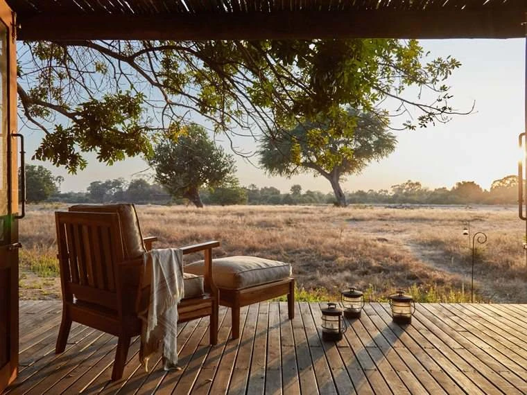
The Safari Five · 1 of 5
A true bushcamp
The foundation that makes everything else possible.
What it is
A bushcamp is a small, unfenced camp set deep in wild country, inside a national park or wildlife concession. It is a handful of rooms (often just three to six) built of thatch, reed, canvas and local timber, usually open to the bush, run off-grid and built around guiding rather than facilities. The animals move through camp, not around it. You fall asleep to hippos in the river and wake to elephants outside. It is smaller and closer to the wild than a lodge, and more comfortable than a camping trip where you pitch your own tent.
Why it matters
The bushcamp comes first because the other four depend on it. A walk starts better from a camp already in the wilderness. The quiet, the small group and the guide who knows the ground around camp are what turn a safari from a stay into an experience.
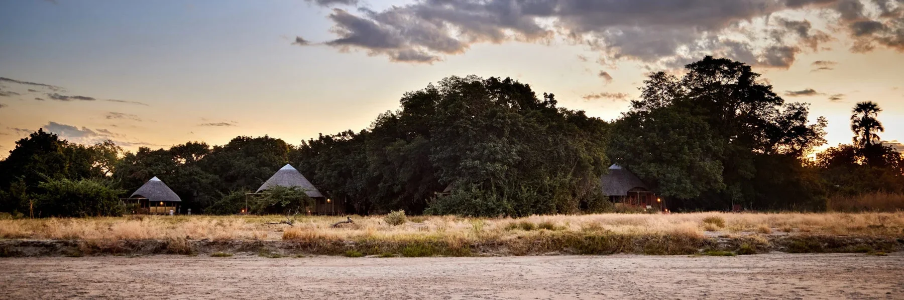
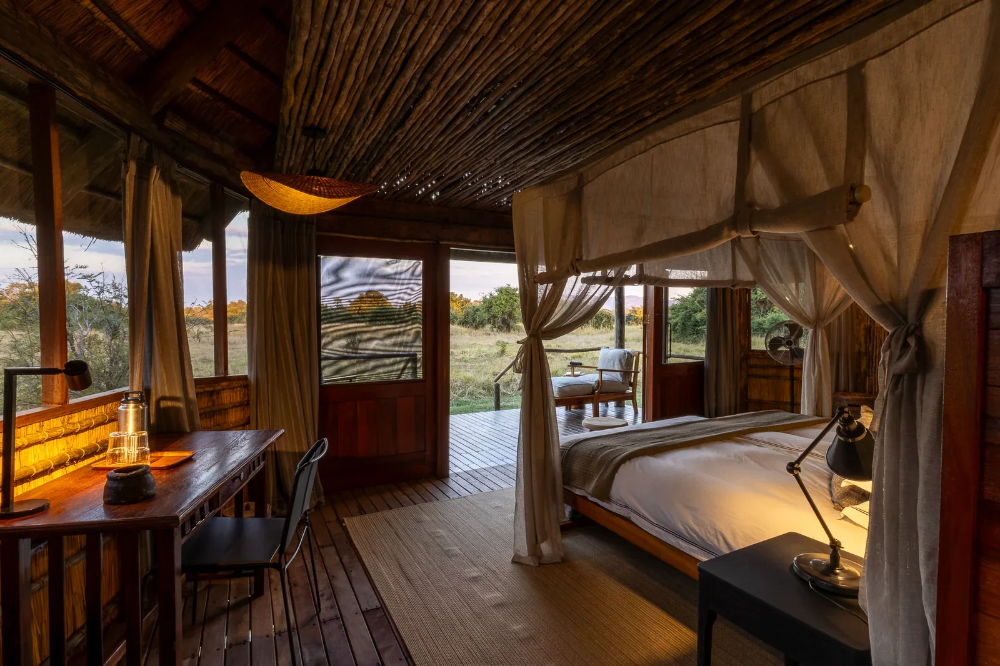
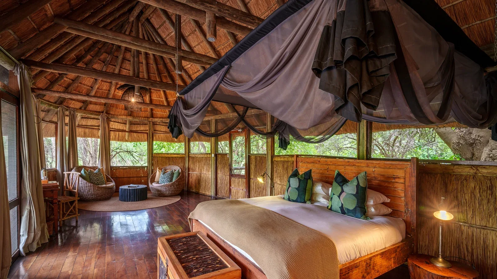
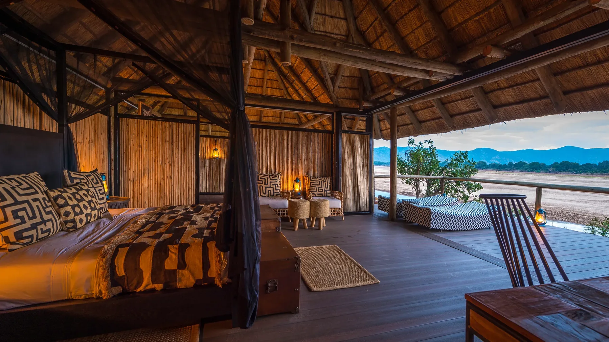
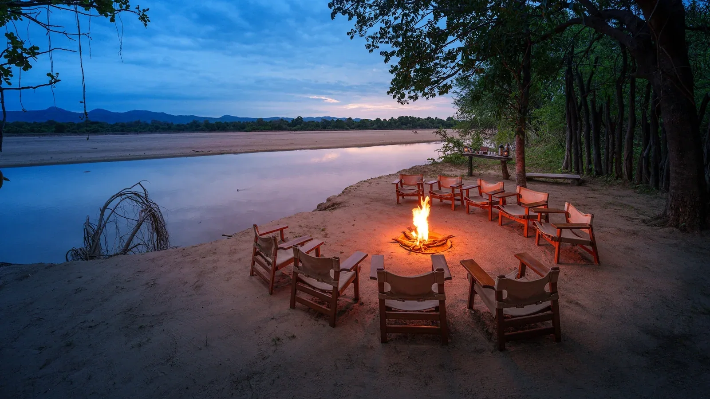
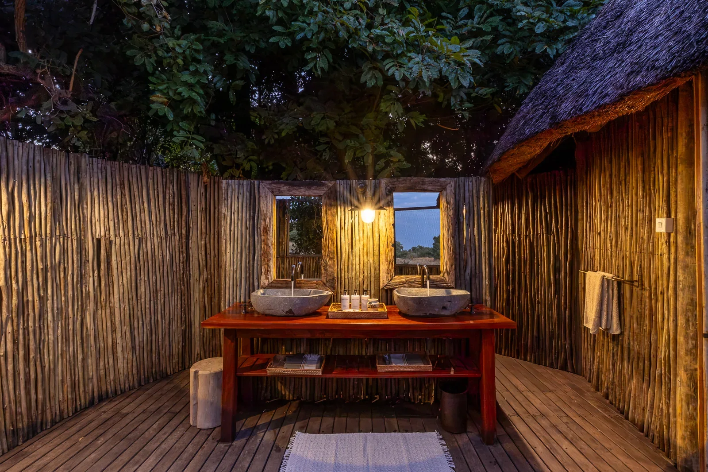
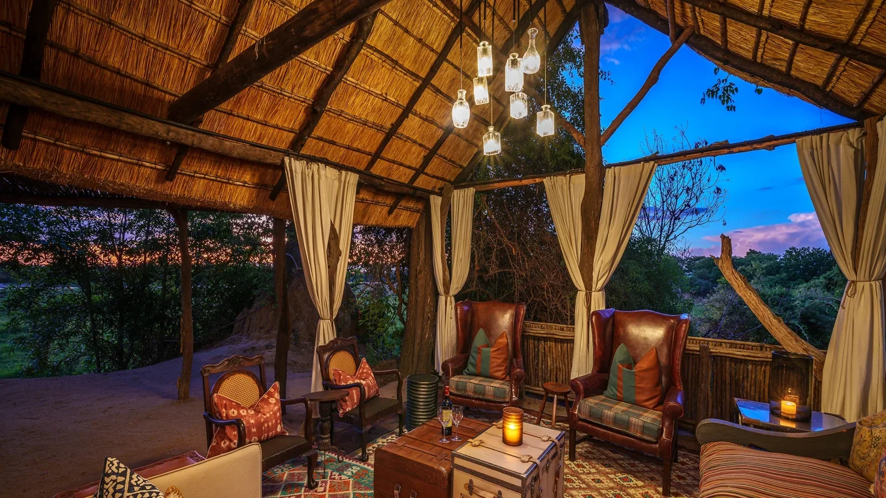
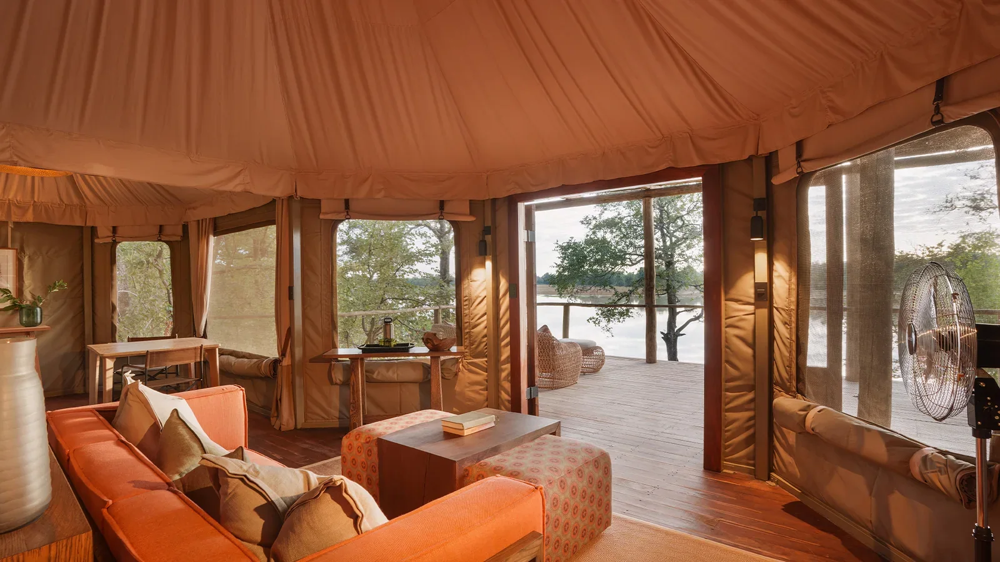
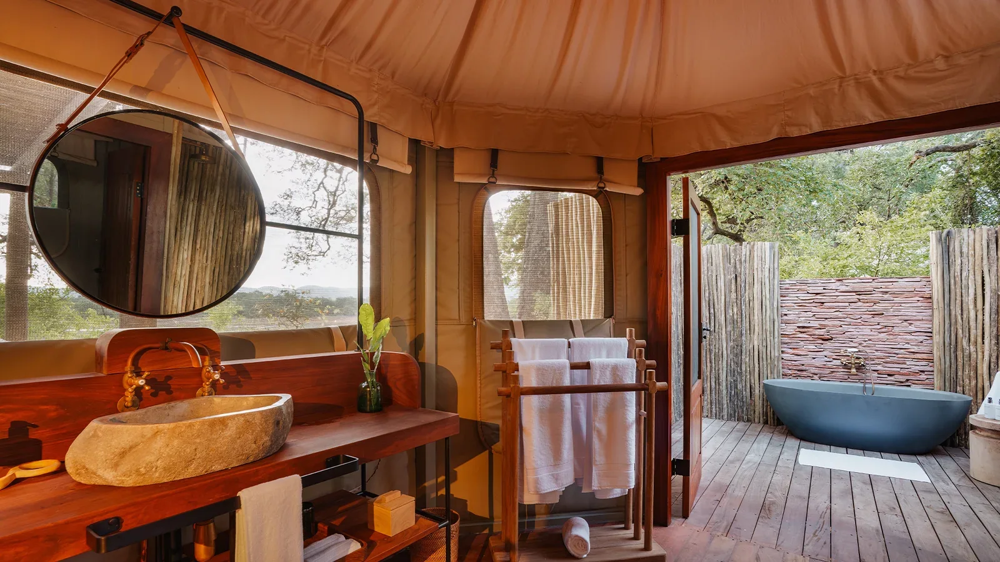
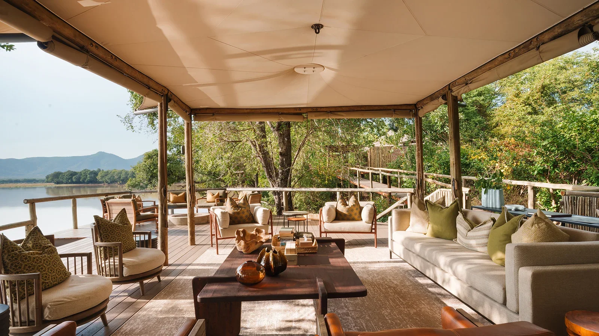
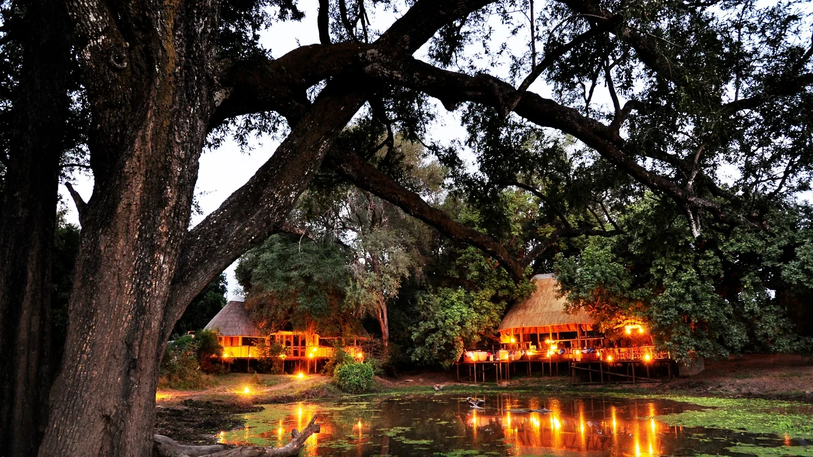
What makes a true bushcamp
There is no single trade definition of a bushcamp, so we have set out the criteria the Safari Five uses. They apply to any camp, in any park or country. They draw on how leading safari operators across Africa describe a bushcamp, and on the only official definition we found, in Zambia's accommodation standards: a semi-permanent camp in natural surroundings that blends in with its surroundings and offers visitors a close experience of the environment.
The five must-haves
- In dangerous-game country. Inside a national park, wildlife concession or conservancy where lion, elephant and buffalo live, and all wildlife can come and go as it pleases, through camp too. Neither the camp nor the land around it is fenced in: the camp is part of an open ecosystem, whether a national park, a concession, or a conservancy or private reserve that is open to a larger wild area.
- Small. Six guest rooms or fewer, and no more than twelve guests, so the camp stays intimate. Most classic bushcamps have three to six rooms.
- Light on the land. Built mostly of natural materials such as thatch, reed, canvas and local timber, so it blends in with its surroundings.
- Built around guiding. Days are led by licensed guides from camp, and walking is offered from camp with no more than six guests per guide.
- Off-grid and simple. Not connected to the power grid: electricity comes from solar panels, and lanterns light the paths at night. No air conditioning or mini-fridges in the rooms.
The hallmarks
Most true bushcamps have most of these.
- Seasonal: open for the dry season, rebuilt or refreshed after the rains
- Rooms open to the bush, or facing it
- Far from the park gateway, the main roads and other camps
- Hosts who live in camp and guides who return year after year
- Meals shared around one table or a fire, under the stars
- Food, drink and activities included
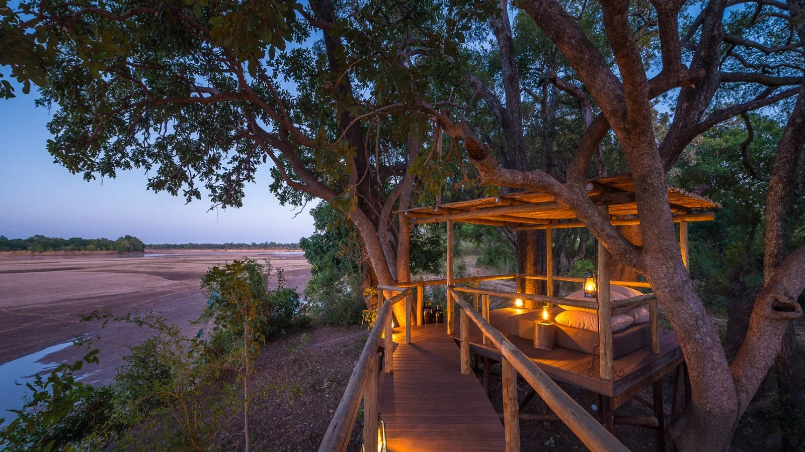
A note on comfort. A bushcamp can be very comfortable. Good beds, hot showers, fine food and even a small plunge pool do not stop a camp being a bushcamp. What matters is where it is, how small it is, how lightly it sits on the land, and that the day is built around being out in the wild with a guide.
What a bushcamp is not
- A large lodge, however beautiful, with a reception desk and dozens of rooms
- A fenced camp, or one inside a fenced reserve where wildlife cannot come and go
- A camping safari where you pitch your own tent
- A camp where the rooms have air conditioning and mini-fridges
Where to find it
True bushcamps are found across Africa: in Zambia's Luangwa Valley and Lower Zambezi, Zimbabwe's Mana Pools and Hwange, Tanzania's Ruaha and Nyerere, the private concessions of northern Botswana and the conservancies of Kenya. Whatever the country, use the criteria above to tell a true bushcamp from a lodge that borrows the name.
Further reading
- What makes a bushcamp safari different?The Bushcamp Company
- Mobile, camp-based or trail: the three kinds of walking safariwalkingsafaris.com
- Walking safaris take you away from the crowdswalkingsafaris.com
- Why a safari circuit is betterThe Safari Heritage Collection
Sources
- Zambia Statutory Instrument No. 14 of 2018, Tourism and Hospitality (Accommodation Establishment Standards) Regulations
- Legends & Legacies of Africa, Norman Carr
- Nkwazi magazine, Zambia: the home of the walking safari
- Time + Tide, From reeds to rooms
- ATTA, 40 years of Robin Pope Safaris
- Southern Destinations, Safari lodge, tented camp, mobile camp, bush camp